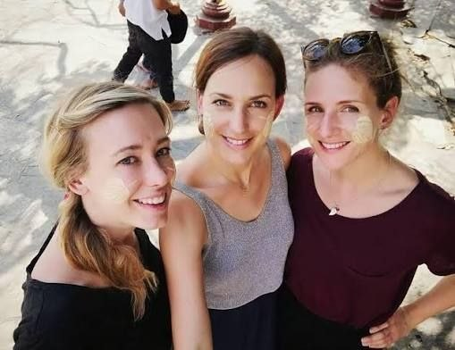
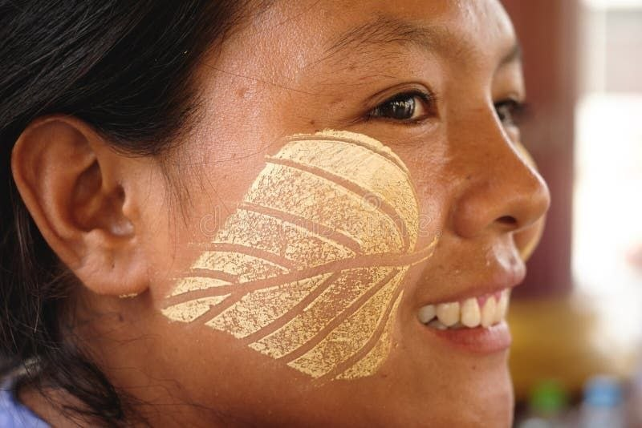
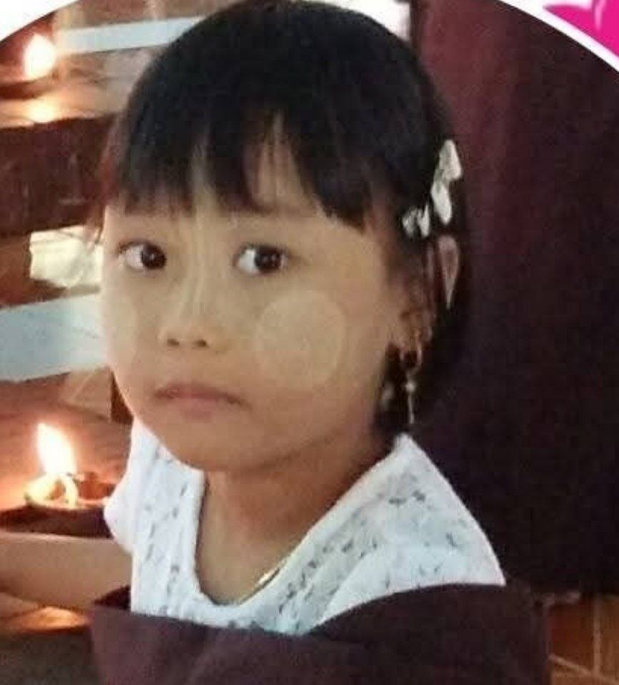
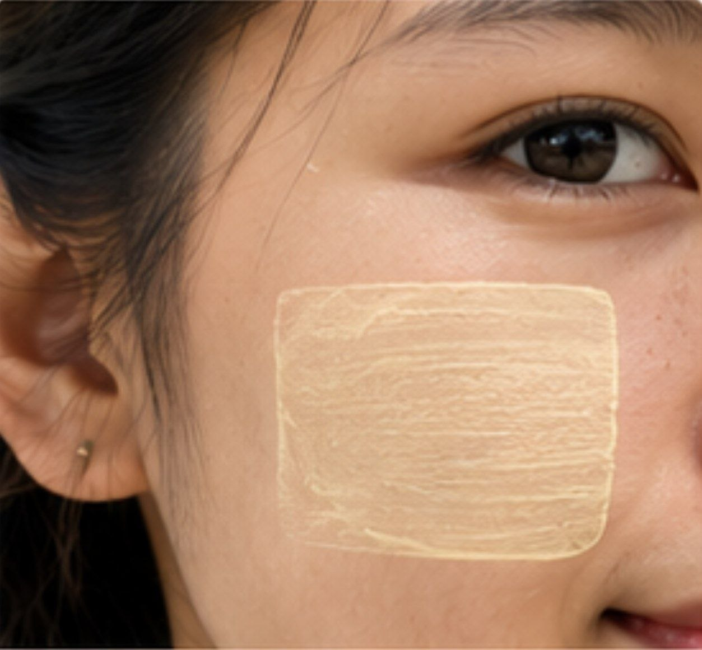

🌿 Page 5: Traditional Thanaka Designs 🌿
|
 These foreign visitors are wearing traditional leaf-shaped thanaka designs on their cheeks. The smooth, curved patterns are inspired by the shape of leaves. |
 Leaf-shaped thanaka is a decorative style inspired by leaves. It can be seen in Bagan during cultural festivals and traditional celebrations. |
 Circular thanaka is a simple style often worn by children. It can be seen in Mandalay and many other places across Myanmar. |
|
 Rectangle designs are a practical, everyday style and can be seen all over Myanmar, especially among young women. |
Created by Ngwe Sin Thoon